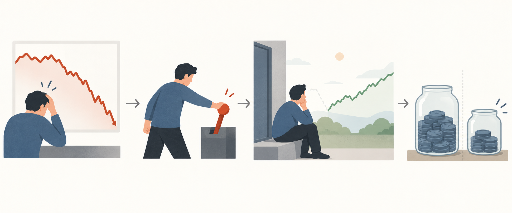

BLOG ESSAY阅读官网原文 →
下跌不可控，行为缺口可以解释
J.L. Collins Stock Series · Stocks — Part I，官网文章，发布于2012-04-15，更新于2023-10-10
为何适合你长期指数投资风险控制行为纪律专业知识讲解
核心主张：市场下跌并不自动破坏长期计划，投资者在恐慌中退出、在恢复后再进入，可能把波动转成行为造成的回报缺口。作者的美国市场经验不能外推为所有指数和产品必然恢复。
- 文章把金融危机和大幅回撤视为市场过程的一部分，强调计划应当预先容纳波动。
- 作者指出，策略的持有期回报与投资者因恐慌交易取得的实际结果可能不同。
- 文章关于市场总会恢复的表述依赖美国宽基历史，不能证明单一国家、行业、旧成份或具体产品都能恢复。
“Correct premise, wrong conclusion.”
今天连接：美国贸易逆差扩大是一项经济事实，不是资产方向信号。文章提供的连接是证据边界：新闻可以改变分析输入，但单月数据不足以支持临时改写长期规则。
不要这样做：边界：不把作者的美国市场经验当作普适定律，也不把一次数据发布改写成资产方向结论。

- 市场阶段：价格出现大幅下跌。
- 行为阶段：投资者因压力退出原有持仓。
- 路径阶段：价格恢复时，投资者留在场外。
- 结果阶段：实际持有路径与原计划产生差距。